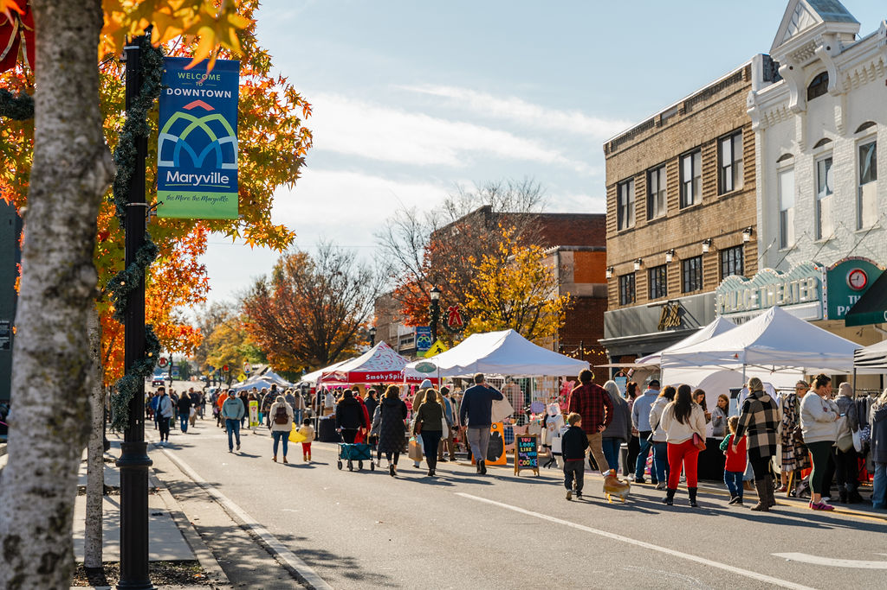
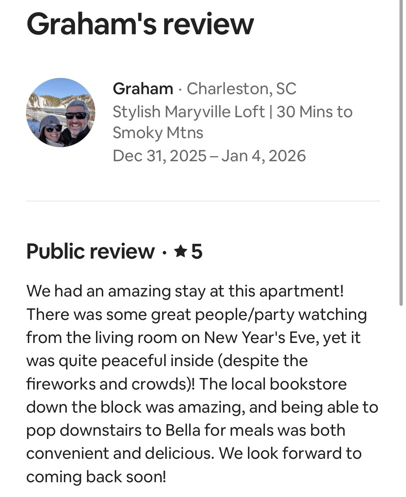
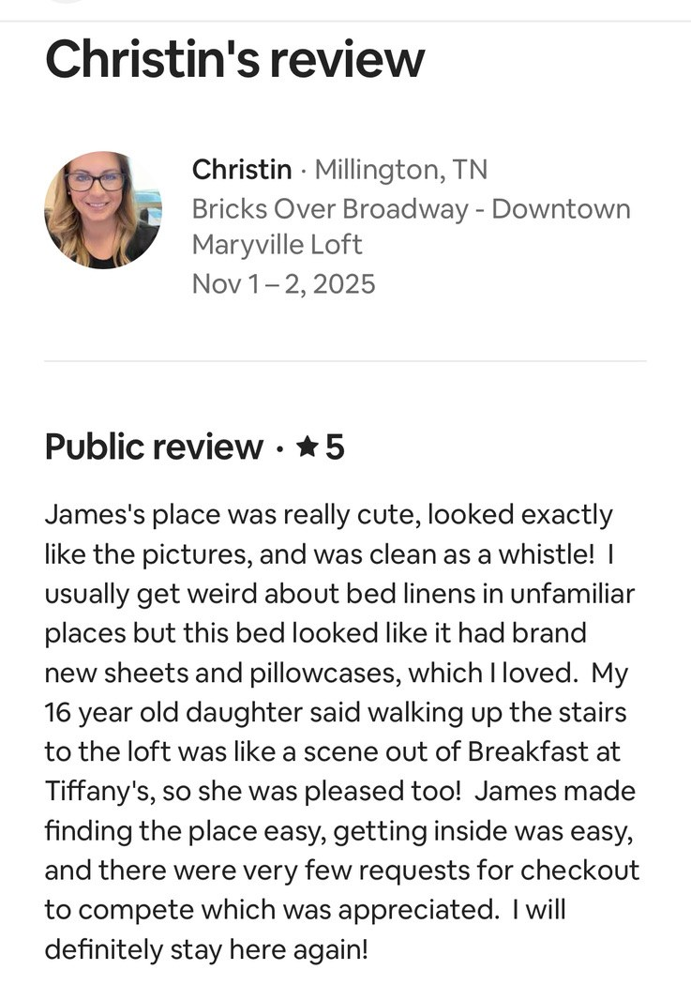
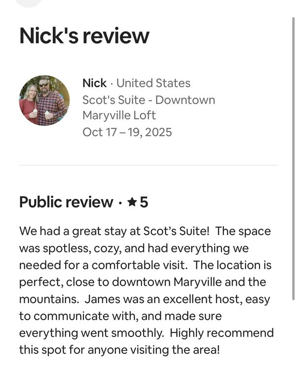
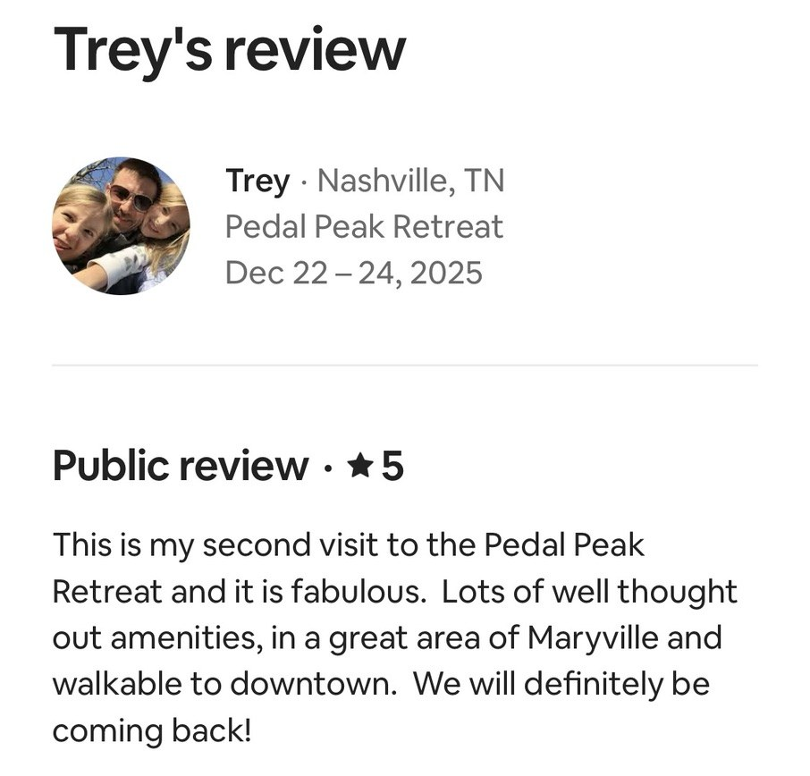
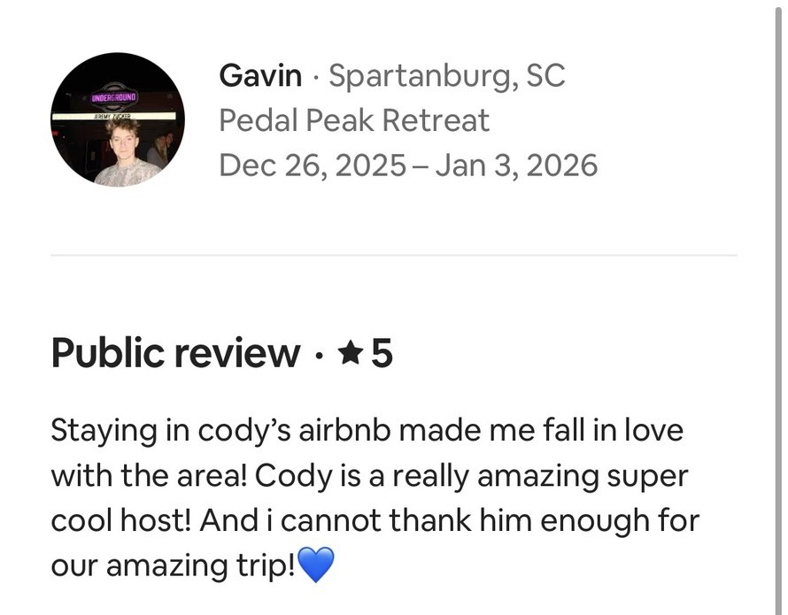
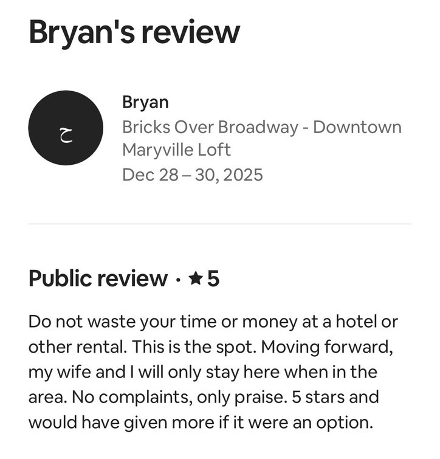

Broadway lofts are upstairs
The Bella-area stays put guests directly downtown. They are ideal for walkability, restaurants, coffee, the historic theatre district, and seasonal events on Broadway.

Book a walkable Maryville stay with Broadway restaurants, morning coffee, the Greenbelt, the Smokies, Knoxville, Alcoa, and campus weekends all within easy reach.
Check dates
Enter your arrival and departure dates to compare the Broadway lofts and Greenway Village suites. Open stays rise to the top, and each card sends you to the live booking page for final rates, rules, and reservation details.
Available stays
6 rentals shown
Choose your location
4 units on Broadway
Best for guests looking for units for 1-2 people with direct access to Broadway, bridal-suite prep, restaurants, and downtown wedding venues.

Walk out to Bella Restaurant, Vienna Coffee House, Tri-Hop Brewery, downtown shops, the Capitol Theatre district, seasonal Broadway events, Pistol Creek, the Clayton Center, Maryville College, and downtown Maryville wedding venues.
2 units in Greenway Village
Best for groups of 2-6, families traveling together, and wedding guests who need more space. Larger units with two bathrooms.
Follow Greenway Village Stays
Step out to Marble Slab Creamery, The Great American Cookie Company, the Maryville-Alcoa Greenway, Pistol Creek, casual dining, Southern Grace Coffee Co., DSB Provisions, and quick routes back into downtown Maryville.
Before you book
The Bella-area stays put guests directly downtown. They are ideal for walkability, restaurants, coffee, the historic theatre district, and seasonal events on Broadway.
The two Greenway Village rentals are two-bedroom, two-bath options for families, couples traveling together, and work trips.
This page helps guests search and compare downtown units. The links will take you to the booking site to complete your booking.
Rental quick guide
Downtown Broadway loft above Bella Restaurant, sleeping 4, close to restaurants, coffee, shops, events, Maryville College, and regional trip routes.
King-bed Broadway apartment for 2 guests in the heart of downtown Maryville, built for walkable weekends, work travel, and quick East Tennessee trips.
Modern studio loft for 2 guests over Bella Restaurant with downtown walkability, secure coded access, and easy Maryville lodging convenience.
Compact Broadway loft for 2 guests near Maryville College, downtown restaurants, Smoky Mountain day trips, and work travel routes.
Two-bedroom Greenway Village stay for up to 6 guests, useful for families, groups, work travel, Smoky Mountain trips, and longer Maryville stays.
Two-bedroom Greenway Village suite for up to 6 guests above Marble Slab Creamery and The Great American Cookie Company, with room for families or colleagues.
Downtown Maryville lodging FAQ
Yes. Bricks Over Broadway offers short term rentals in two walkable downtown Maryville locations: Broadway above Bella Restaurant and Greenway Village above The Great American Cookie Company.
Yes. Guests comparing Airbnb, AirBnB, Vrbo, VRBO, hotels, and other Maryville lodging options can use this site to search Bricks Over Broadway rentals and continue to live direct booking pages.
Both locations are walkable, but they serve slightly different parts of downtown Maryville. Broadway above Bella is the most central choice for Broadway restaurants, coffee, shops, and evening plans. Greenway Village is slightly removed from the Broadway restaurants, with direct access to the Greenway, nearby coffee shops, and DSB Provisions.
Yes. Enter your dates once to compare the Broadway units and Greenway Village units, then choose the rental that fits your trip and continue to the live booking page.
Reviews
Real 5-star notes from recent stays help guests feel the difference between a random rental and a place people would book again.





